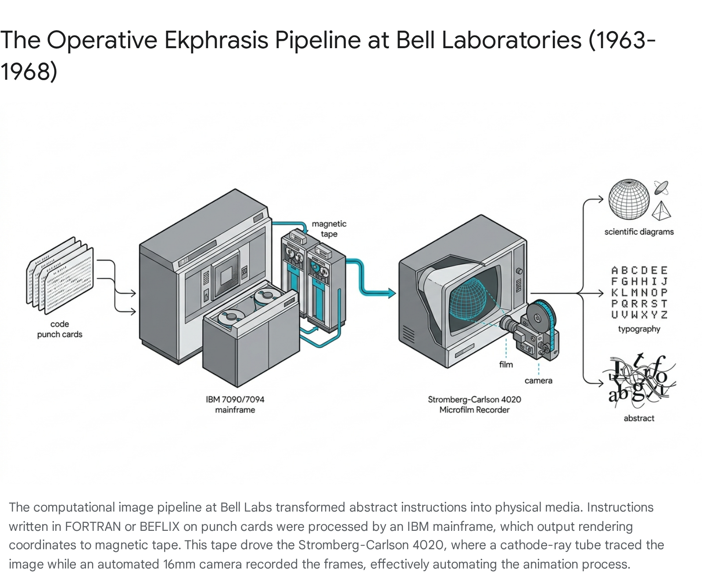
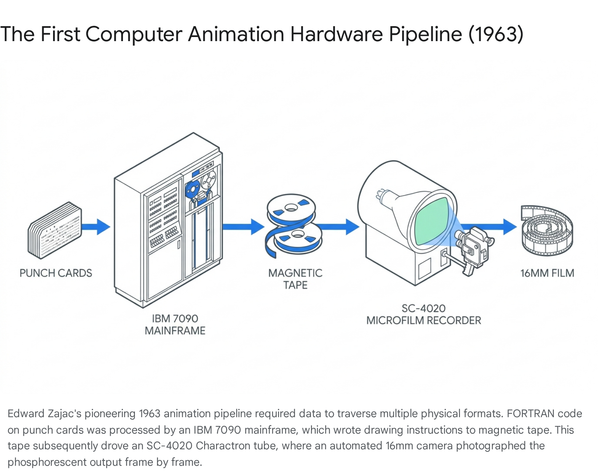
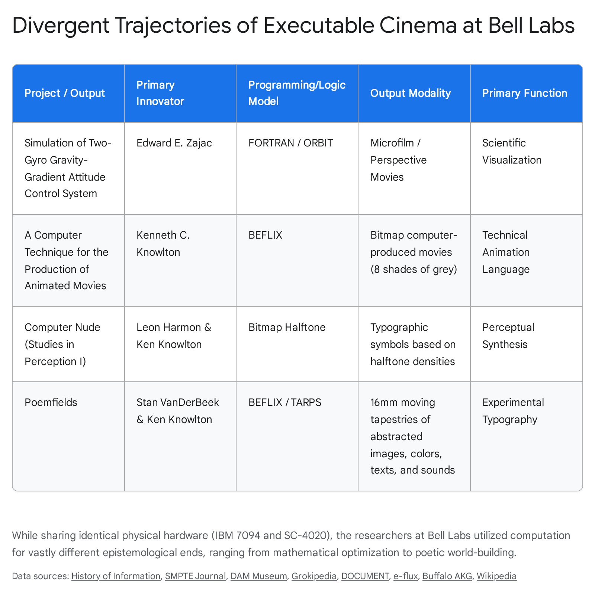
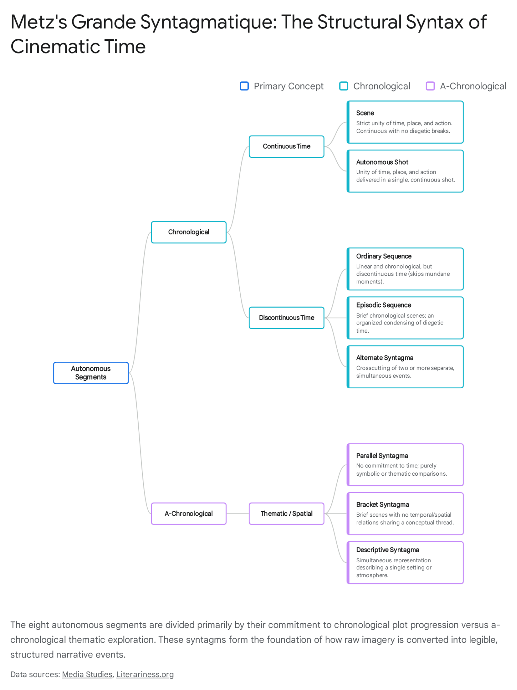
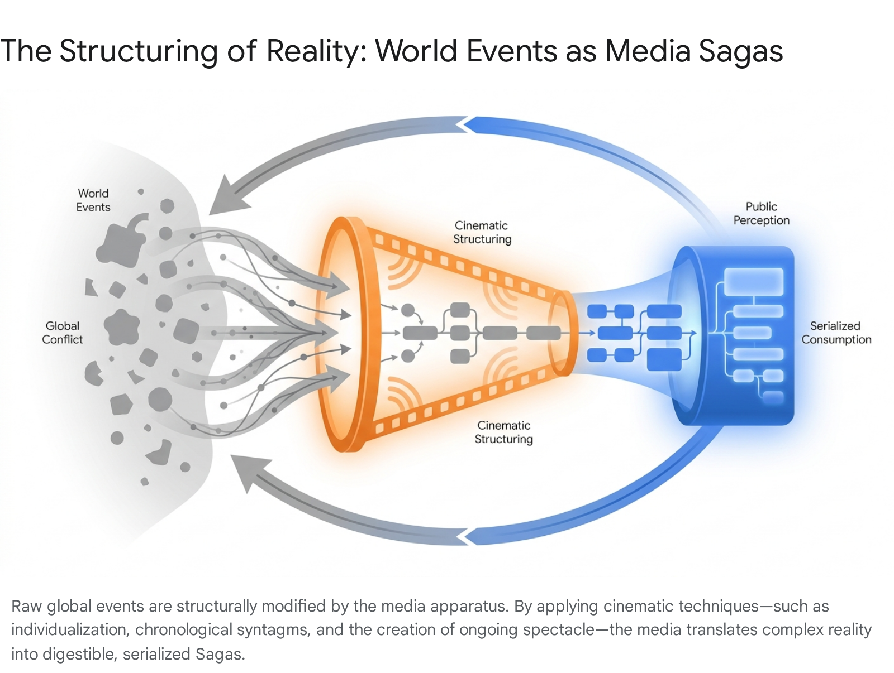
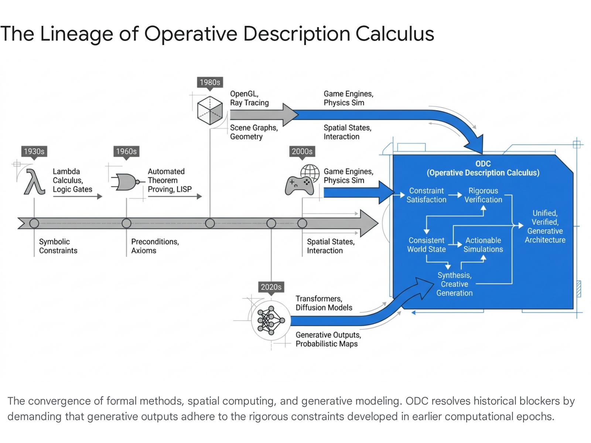

I. Academic Thesis
II. Media Archaeology

I. The Relocation of Authorship
Within the ABC Cineosis framework, the moving image is not merely recorded or projected; it is synthesized through symbolic operations. Ken Knowlton's development of BEFLIX at Bell Labs (1963) represents the absolute birth of programmable cinema. Authorship moved from the photochemical surface of film to the mathematical parameters of punched cards. The IBM 7094 mainframe interpreted alphanumeric scripts, constructed pictures mathematically within its memory, and wrote rendering coordinates onto magnetic tape fed into the Stromberg-Carlson SC-4020 microfilm recorder.
BEFLIX Grid Specification (1963)

⚠️ CRITICAL HISTORICAL AUDIT: THE ESOLANG FALLACY
Please note a recurring error in speculative media genealogy (specifically found in early drafts like d3.md):
BEFLIX is NOT an esoteric programming language (esolang) created by Chris Pressey in the 1990s.
BEFLIX was created in 1963 by Ken Knowlton at Bell Labs as a compiled graphics/animation language running on an IBM 7094 mainframe. Befunge is a separate stack-based 2D esolang created by Chris Pressey in 1993. Attributing BEFLIX to Pressey or the esolang movement is a historical hallucination. ABC Cineosis enforces absolute due diligence to maintain archival integrity.
II. Simulation as Visual Explanation: Zajac (1963)
Edward E. Zajac produced the first computer-animated scientific film: Simulation of a Two-Gyro Gravity-Gradient Attitude Control System. Using FORTRAN and the ORBIT plotting sub-routine (Frank Sinden), he rendered satellite yaw, pitch, and roll as perspective bounding-box views onto microfilm. The film was an epistemological necessity — engineers could not intuitively "see" if the satellite was tumbling or stabilizing by reading numerical printouts.

III. Perceptual Synthesis: Harmon & Knowlton (1967)
Leon Harmon and Kenneth Knowlton scanned a photograph of choreographer Deborah Hay, converting analog voltages into discrete binary numbers algorithmically assigned to typographic symbols based on calculated halftone densities. The resulting 150 × 370 cm mosaic — Computer Nude (Studies in Perception I) — demonstrated that the computer image is fundamentally an illusion of spatial quantization. On October 11, 1967, it appeared in The New York Times as the publication's first full-frontal nude.
IV. Executable Cinema: Poemfields (1966–1971)
Using BEFLIX alongside TARPS macros, VanDerBeek and Knowlton produced multilayered tapestries of geometry and cascading typography. The computer screen became a "worldtext." Color was applied via optical printing by Bob Brown and Frank Olvey in post-production. In Poemfield No. 7, VanDerBeek programmed A.J. Muste's poem: "THERE IS NO WAY TO PEACE; PEACE IS THE WAY; NO MORE WAR" — hacking the corporate machine to deliver anti-war messaging through Cold War engineering tools.


V. The Cineosis Platform Reinstantiation
Our platform reinstates the Cartesian restrictions of 128×96 monochrome grids to force LLMs to compile movies directly from syntax — stress-testing their temporal reasoning capacity against Knowlton's rigid coordinate laws.

Primary Archaeological Sources
Select a bibliography card from the list to view curatorial notes and full document reader.
Click on a framework name or row in the table above to view deep-dive analysis, technical constraints, and Batesonian exegesis.
Select a paper from the list on the left to begin reading.
Select a frame to load its macro code.